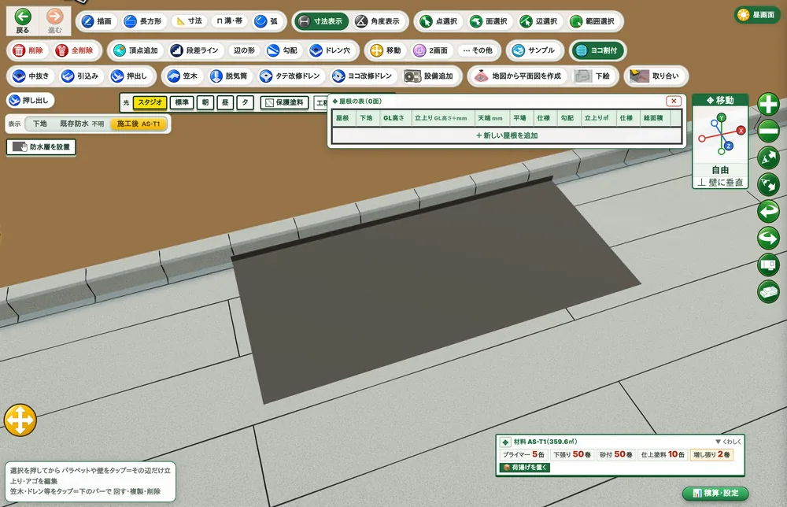
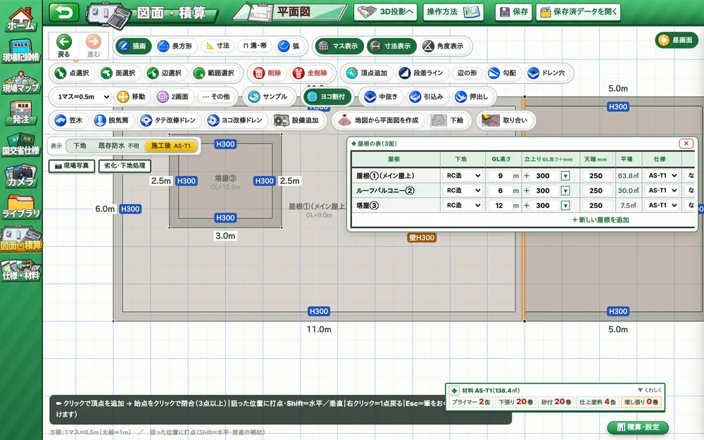
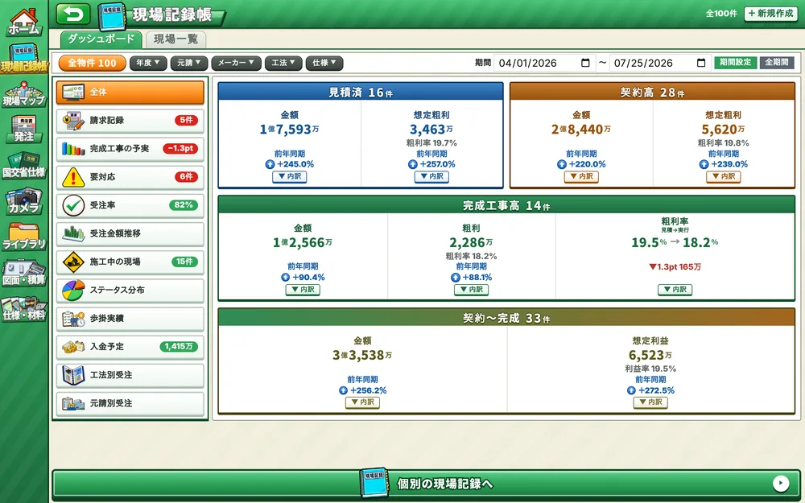
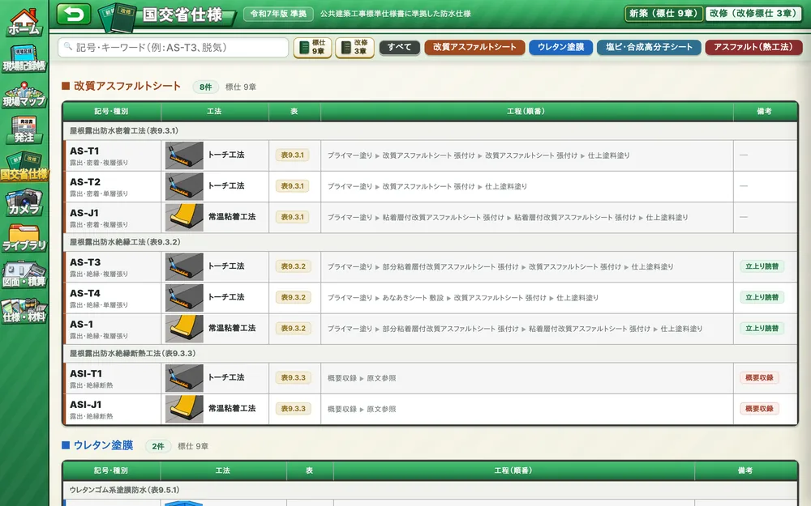
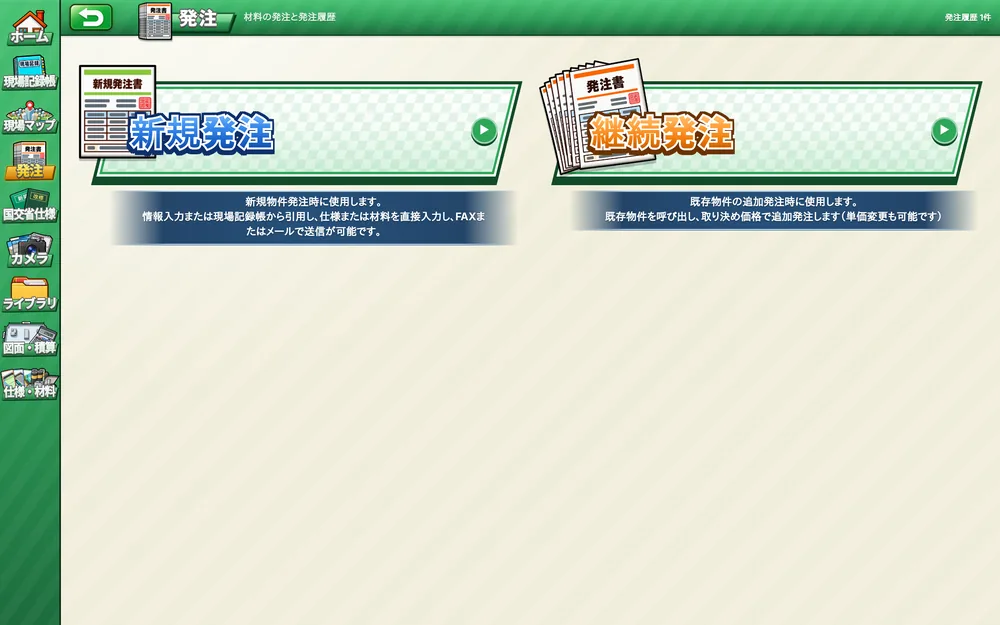

#現場記録帳#図面・積算#3D納まり#国交省仕様#発注書#ライブラリ#カメラ
納まりに悩む全ての防水屋さんへ
まだ納まりを
"頭の中"だけで
回してるの？
$ osamari-navi --scan genba_0423.jpg
現場写真を読み込み中...
> 入隅・立上り・ドレンを検出
> 3D納まり 生成完了 ✔
> AS-T1 138.4㎡ 材料数量を算出
納まりナビ
BOUSUI OSAMARI
3D & TAKEOFF
TOOL
What is 納まりナビ? ◆What is 納まりナビ? ◆What is 納まりナビ? ◆What is 納まりナビ? ◆What is 納まりナビ? ◆What is 納まりナビ? ◆What is 納まりナビ? ◆What is 納まりナビ? ◆
WHAT WE ARE
納まりナビとは？
現場の納まりを3Dにして
数量と見積まで出す
防水屋さんの道具です
写真を撮る。辺をなぞる。工法を選ぶ。それだけで、頭の中にしかなかった納まりが3Dになり、材料の数量と金額が出ます。スマホ1台で、現場で。
Record Book全現場を一覧で把握
Drawing & Takeoffかいた瞬間に数量が出る
3D Detail立上り・入隅を3Dで見せる
Spec Book新築・改修の標準仕様を搭載
Order積算からそのまま発注
Library納まりの引き出しが増える
Why 納まりナビ? ◆Why 納まりナビ? ◆Why 納まりナビ? ◆Why 納まりナビ? ◆Why 納まりナビ? ◆Why 納まりナビ? ◆Why 納まりナビ? ◆Why 納まりナビ? ◆
WHY 納まりナビ
なぜ"納まりナビ"で
現場が回るのか？
PROMISE01
納まりは、
ベテランの頭の中にしかない
だから
写真に線を引くだけで3Dの納まりになる
osamari_3d.view ― 立上り→平場に防水層を張る

▲ 入隅をまたいで、立上りから平場へ1枚で張った状態
入隅、立上り、ドレン回り。現場で一番もめるところほど、図面には描いてありません。納まりナビは、現場写真を撮って、対象の辺をなぞり、付けたい部位を選ぶだけ。頭の中の納まりが3Dになって、若手にも職長にも、同じ絵で伝わります。
PROMISE02
数量は現場で出したい。
でも実測も図面起こしも時間がかかる
だから
図面をかいた瞬間に材料と金額が出る
zumen_sekisan.html ― 平面図 → 数量

▲ 屋根①＋ルーフバルコニー②＋塔屋③。右下に材料AS-T1の数量が出ている
屋上の形をなぞって、立上りの高さと工法を選ぶ。それだけで平場・立上りの面積、プライマーやルーフィングの数量、金額まで自動で出ます。現場調査のその場で見積を出せるから、持ち帰って夜に積算する時間がなくなります。
PROMISE03
「あの現場、どう納めたっけ？」は
辞めた人しか知らない
だから
記録帳に残るから会社の財産になる
kirokucho.html ― 現場記録帳（ダッシュボード）

▲ 見積済・契約・完成の件数と金額、粗利まで一覧
施工した納まり、写真、調査の寸法、材料の金額、受注の金額。全部を現場ごとに記録帳へ。一覧で全現場を把握でき、似た納まりが出たら過去物件をそのまま転用。経験値が個人ではなく、会社に貯まります。
PROMISE04
仕様はメーカーごとに違う。
国交省仕様も改定される
だから
国交省仕様＋自社仕様を登録して、現場で選ぶだけ
kokkosho.html ― 公共建築工事標準仕様書

▲ 改質アスファルトシート・ウレタン塗膜・塩ビシート、新築と改修を記号で引ける
公共建築工事標準仕様書（新築・改修）を搭載。さらに自社が使う防水メーカーの仕様を登録すれば、現場で工法を選ぶだけで、工程・材料・使用量がその仕様どおりに出ます。
PROMISE05
見積が決まったら、
その日のうちに発注したい
だから
積算からそのまま発注書になる
hacchu.html ― 新規発注／継続発注

▲ 記録帳の物件から材料を引用して、FAX・メールで送る
積算で出た材料数量を、新規発注・継続発注にそのまま引き継ぎ。単価を入れれば、FAXでもメールでも送れる発注書に。見積→受注→発注が、同じ画面の中でつながります。
PRICE
料金
マイクロSaaS／1社あたり
¥35,000／月（税別・予定）
- 現場記録帳・図面積算・3D納まり・国交省仕様・発注・ライブラリ、ぜんぶ入り
- スマホ・タブレット・PCで同じ画面（ホーム画面に追加して使える）
- 2027年9月 正式リリース予定
いまはデモ版を無料で公開中。料金・内容は正式版までに変わることがあります。
防水施工会社防水メーカー元請事業者
LET'S TRY
まずは、デモを
触ってみてください
登録なし。スマホのブラウザで開くだけで、図面・3D・記録帳をそのまま触れます。